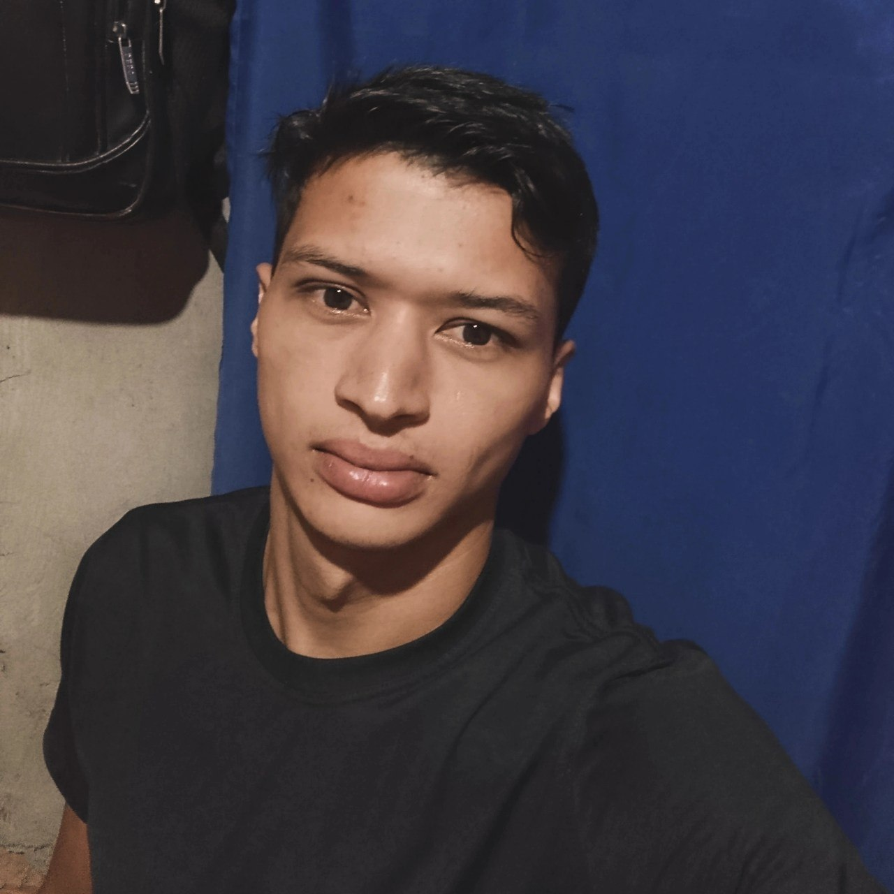
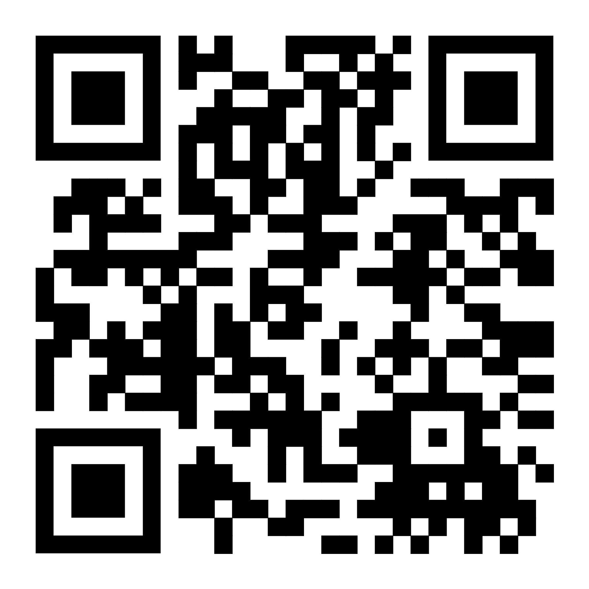

Leildo Gonçalves — Professor, Pesquisador e Criador do Mestre Kira

Leildo do Nascimento Gonçalves é professor de Língua Portuguesa, pesquisador e desenvolvedor de projetos educacionais voltados ao ensino da linguagem, produção textual e tecnologia aplicada à educação.
É graduado em Letras — Língua Portuguesa e Literaturas de Língua Portuguesa pela Universidade Estadual do Maranhão (UEMA) e acadêmico do curso de Análise e Desenvolvimento de Sistemas pela mesma instituição.
Sua trajetória acadêmica e profissional articula estudos linguísticos, literários e tecnológicos, com foco no desenvolvimento de práticas pedagógicas e ferramentas digitais voltadas ao ensino, à leitura, à escrita e à formação crítica.
Experiência profissional e atuação educacional
Atua como professor na rede pública de ensino no estado do Maranhão, desenvolvendo atividades ligadas ao ensino de Língua Portuguesa, produção textual e formação docente.
Ao longo de sua formação complementar, realizou estudos nas áreas de:
- Ensino de leitura, escrita e produção textual;
- Análise do discurso midiático;
- Linguística aplicada à educação;
- Docência no ensino superior e tutoria EaD;
- Educação inclusiva;
- Tecnologias educacionais e recursos digitais;
- Programação web e desenvolvimento de sistemas.
Criação do Mestre Kira
O portal Mestre Kira surgiu a partir da necessidade de construir um espaço educacional que integrasse linguagem, tecnologia e produção de conhecimento de forma acessível, organizada e pedagogicamente fundamentada.
O projeto reúne conteúdos sobre Linguística, Literatura, Análise do Discurso, interpretação textual e redação, oferecendo materiais voltados a estudantes, professores, pesquisadores, vestibulandos e concursandos.
Além do portal educacional, Leildo Gonçalves também desenvolveu a Plataforma de Redação Mestre Kira, ambiente digital voltado à produção, correção e gerenciamento de redações para escolas, professores e estudantes.
A plataforma foi criada com foco na organização pedagógica do ensino de redação, permitindo acompanhamento de desempenho, correção por competências e apoio à preparação para ENEM e vestibulares.
Conheça a Plataforma de Redação Mestre Kira
Pesquisa e produção acadêmica
Sua atuação acadêmica também envolve pesquisas relacionadas à linguagem, literatura, discurso e ensino.
Entre suas produções, destaca-se o artigo:
“Transculturação em Os Sertões: identidade, discurso e ensino de literatura”.
Também desenvolve pesquisas e projetos voltados à integração entre educação, tecnologia e ambientes digitais de aprendizagem.
Currículo Lattes
O currículo acadêmico completo pode ser acessado por meio da Plataforma Lattes:

Escaneie para acessar o Currículo Lattes.
Educação, linguagem e tecnologia
O trabalho desenvolvido no Mestre Kira parte da compreensão de que a educação contemporânea exige integração entre conhecimento, tecnologia e práticas pedagógicas significativas.
Nesse contexto, o projeto busca contribuir para democratização do acesso a conteúdos educacionais de qualidade e para fortalecimento do ensino de Língua Portuguesa, leitura, escrita e produção textual.